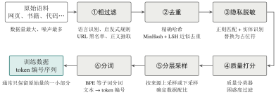

3.3 预训练数据工程
模型结构决定了能装多少知识，训练数据决定了装进去的是什么。预训练要用万亿级 token，这些数据从哪里来？互联网原始文本充斥着广告、乱码、重复和隐私信息，怎样把它们变成可用的训练数据？文字又怎样变成模型能读的数字？本节依次讨论数据的要求与来源、六步预处理流程和分词器，最后说明数据质量为什么比数量更关键。结论是：经过精心过滤和去重的数据，效果可以超过规模更大但未充分处理的数据。
3.3.1 预训练数据的特点与要求
大语言模型的预训练数据有三个特点：多源混合——来自网页、书籍、百科、代码、论文、对话等，风格、质量和知识类型差异很大；数量庞大——主流模型以万亿（\(10^{12}\)）token 计，足够的数据量是性能的保障；质量参差不齐——在低质量语料上预训练会严重损害模型性能。
因此构建数据集要兼顾几方面要求：
平衡性：不同领域、语言、体裁的比例均衡，避免模型偏向某一类内容；
时效性：覆盖尽可能新的知识，否则模型对近期事件一无所知；
可解释性：清楚数据的来源、处理方式以及内容特征与用途之间的关系，出了问题能追溯；
代表性：数据分布与模型的实际使用场景匹配；
采集方式：尽量随机、无偏地采集，减少采集过程本身引入的系统性偏差；
隐私与伦理：遵守法律法规和网站的爬取约定，去除个人隐私，避免版权和伦理风险。
3.3.2 数据来源
预训练数据分为两大类。通用数据包括网页、书籍和对话文本，规模大、覆盖广，提供基本的语言能力和世界知识：网页占比通常最高，主要来自 Common Crawl 等公开爬取项目；书籍篇幅长、逻辑连贯，有助于学习长距离依赖；百科（如维基百科）知识密度高；对话数据（如论坛问答、Reddit 讨论）有助于学习交互式表达。专业数据包括多语言文本、科学文献和代码，用于增强特定能力：多语言数据提升跨语言理解与翻译，论文与教材提升专业知识与公式理解，代码数据让模型学会编程，许多研究还认为它有助于逻辑推理。
表 3-2 是几个代表性模型的数据构成：都以网页为主体，混入一定比例的高质量数据。
表 3-2 代表性大语言模型的预训练数据构成（采样比例；GPT-3 原文各项四舍五入后合计为 101%）
| 模型 | 参数量 | 训练 token 数 | 数据构成 |
|---|---|---|---|
| GPT-3（2020）^[[3]](ref | erences.qmd#ref-3 | )^ 175B | 300B 过滤后的 Common Crawl 60%、WebText2 22%、Books1 8%、Books2 8%、维基百科 3% |
| PaLM（2022）^[[9]](refe | rences.qmd#ref-9) | ^ 540B | 780B 社交媒体对话 50%、过滤后的网页 27%、书籍 13%、GitHub 代码 5%、多语言维基百科 4%、新闻 1% |
| LLaMA（2023）^[[4]](ref | erences.qmd#ref-4 | )^ 7B/13B/33B/65B | 1.0T/1.0T/1.4T/1.4T Common Crawl 67%、C4 15%、GitHub 4.5%、维基百科 4.5%、书籍 4.5%、arXiv 2.5%、StackExchange 2% |
表中 B 表示 billion（十亿），T 表示 trillion（万亿）；WebText2 是 OpenAI 抓取的、被 Reddit 用户高赞链接所指向的网页。近年的前沿闭源模型通常不公开数据细节，只披露来源类别。以 OpenAI 于 2026 年 7 月发布的 GPT-5.6 系统卡为例[10]，来源分三类：一是互联网上的公开信息，即可公开访问的网页、论坛、博客、百科；OpenAI 的爬虫说明称其遵守网站的 robots.txt 协议，并过滤需要付费墙访问的来源和主要聚合个人信息的站点[11]。二是与第三方合作获得的数据，例如与媒体、出版社、学术平台签约获得的高质量文本。三是用户、人工训练师和研究人员提供或生成的数据，例如专家撰写的对话与推理样例、偏好打分数据、用户授权使用的交互数据。系统卡还说明会过滤数据以减少个人信息、用安全分类器剔除有害内容。此外，多家机构的技术报告都提到用前代模型生成合成数据，其比重近年明显上升。
研究者和开源社区也整理了许多可直接使用的数据集（表 3-3）。Hugging Face 的数据集板块汇集了其中大部分，并提供统一的下载接口。
表 3-3 常用的开源预训练数据集
| 数据集 | 发布方 | 规模 | 特点 |
|---|---|---|---|
| Common Crawl | Common Crawl 基金会 | PB 级，持续更新 | 2008 年起定期爬取的网页快照，几乎所有大模型的网页来源，需大量清洗 |
| C4 | 约 750 GB | Common Crawl 经规则过滤的英文语料，最初用于训练 T5 | |
| The Pile^[[12]](refer | ences.qmd#ref-12)^ | EleutherAI | 825 GiB 22 个子集，含论文、代码、法律文书等专业数据 |
| ROOTS | BigScience | 1.6 TB | 46 种自然语言、13 种编程语言，用于训练 BLOOM |
| RefinedWeb^[[13]](ref | erences.qmd#ref-13)^ | TII | 约 5T token 只用网页，经严格过滤去重（公开约 600B token），表明纯网页也能训练出好模型 |
| SlimPajama | Cerebras | 627B token | 对 RedPajama 深度去重得到 |
| FineWeb^[[14]](refere | nces.qmd#ref-14)^ | Hugging Face | 约 15T token 2024 年发布的英文网页数据集，公开了完整处理流程 |
3.3.3 数据预处理流程
原始数据要经过图 3-4 所示的六步处理才能用于训练。

图 3-4 预训练数据的典型处理流程。①～③去掉明显无用、重复和涉及隐私的内容，④～⑤在剩余数据中挑选“好的”并决定各来源的比例，⑥把文本变成模型能读的 token 编号
① 粗过滤 以较低的计算成本剔除明显无用或有害的内容：用语言分类器做语言识别，只保留目标语种；用启发式规则删除过短、符号或数字占比过高、大量重复行的页面；用 URL 黑名单屏蔽垃圾、色情、仇恨言论和聚合个人隐私的站点；从 HTML 中抽取正文，去掉导航栏、广告和版权声明。
② 去重 转载新闻、镜像站点、模板化页面造成了大量重复。重复数据浪费算力，还会让模型“死记硬背”，增加逐字复现训练文本、泄露隐私的风险。精确去重对每篇文档计算哈希值，相同者只留一份。很多重复文本只差时间戳、广告位，精确哈希识别不了，需要近似去重：把文档表示为 \(n\)-gram 集合，用 Jaccard 相似度衡量两篇文档 \(A\)、\(B\) 的重合程度： \[J(A,B)=\frac{|A\cap B|}{|A\cup B|}. \tag{3-6}\] 数十亿篇文档两两比较的代价与文档数的平方成正比，不可行。MinHash 利用一个性质：用理想的随机哈希函数（相当于对所有元素做一次随机排列）处理集合元素后，两个集合最小哈希值相等的概率恰好等于它们的 Jaccard 相似度， \[\Pr\bigl[\min h(A)=\min h(B)\bigr]=J(A,B). \tag{3-7}\] 于是用若干个哈希函数为每篇文档生成一个简短“签名”，再用局部敏感哈希（Locality-Sensitive Hashing，LSH）把签名相近的文档分到同一个桶里，只在桶内比较，就能在接近线性的时间内找出相似度超过阈值（如 0.8）的文档对。
③ 隐私脱敏 语料中必须删除个人可识别信息（Personally Identifiable Information，PII），如姓名与住址的组合、电话、邮箱、身份证号、银行卡号。常用正则表达式与命名实体识别模型结合，把识别出的信息替换为占位符（如 <EMAIL>）或直接删除。
④ 质量打分 去掉明显的垃圾后，还要区分“能用的”和“好的”：保留逻辑清晰、信息密度高、噪声低的长文本，过滤空洞的短句。一类方法用分类器：以维基百科、书籍等公认的高质量文本为正例、随机网页为负例，训练一个轻量分类器（如 fastText）给每篇文档打分；近年也有工作先用大模型给文档的“教育价值”打分，再用这些分数训练小分类器[14]。另一类方法用困惑度：先在高质量语料上训练一个小语言模型，再计算每篇文档的困惑度（perplexity，PPL） \[\mathrm{PPL}(\boldsymbol{x})=\exp\Bigl(-\frac{1}{T}\sum_{t=1}^{T}\log P(x_t\mid x_{<t})\Bigr). \tag{3-8}\] 它正是式 （3-2） 损失的指数，衡量模型对这段文本“感到意外”的程度。困惑度越低，文本越接近高质量语料的风格；困惑度过高的往往是乱码、机器拼接文本或列表式垃圾内容。不过，专业性强或较罕见的高质量文本困惑度也可能偏高，所以阈值要谨慎设置，常与分类器结合使用。
⑤ 分层采样与数据配比 不同来源的价值不同，不能按原始数量简单混合。数据配比（data mixture）规定训练时从每个来源采样的比例。例如 LLaMA 中维基百科、书籍的原始体量远小于网页，却被重复采样两遍以上（上采样），在训练中获得更高权重；低质量网页则被下采样。配比通常要靠小规模实验反复调整，以均衡通用知识、代码、学术和长文本。不少模型还会在预训练的最后阶段提高高质量数据的比例，称为退火阶段。
⑥ 分词 最后，分词器把清洗好的文本切成 token 并转换为整数编号，作为模型的输入。下一小节单独讨论。
上面六步之外，构造训练数据时还有两件事要专门处理：防止评测题混进训练集，以及把长短不一的文档装进固定长度的训练序列。
测试集去污染 去重只处理训练集内部的重复。还有一类重合危害更大：训练文档里恰好含有评测题目或答案。这称为数据污染（data contamination）。模型若见过评测题，成绩只反映它记住了多少，不反映真实能力，评测结果会偏高。常用的检测方法是 \(n\)-gram 重叠：把每道评测题切成连续的 \(n\) 个词（中文可按字）组成的片段，在训练语料里查找是否出现相同片段；命中的文档被视为受污染，需要删除或截去。例如取 \(n=8\) 个字，评测题“光合作用发生在叶绿体的哪一个部位”与某个训练网页共享片段“光合作用发生在叶绿体”（10 个字，含 8 字重合），该网页就被标记。\(n\) 太小，常见短语也会误报；\(n\) 太大，稍作改写的题目就漏检。
GPT-3 的做法常被引用[3]（论文附录 C）：对所有评测集的题目检索 13-gram 重合，这里的“词”指小写、无标点、按空白切分的单词；命中的 13-gram 连同前后各 200 个字符一并删去，原文档被切成若干片段，短于 200 个字符的片段丢弃，被切成超过 10 段的文档整篇删除；同一个 13-gram 若出现在超过 10 篇训练文档里，多半是常用语或法律套话，不算污染。论文同时坦承，因为程序错误，这一步只清除了部分重合，而重新训练代价太高，所以事后又对各评测集按“题目长度的第 5 百分位”取 \(n\)（下限 8、上限 13）做重合分析，分别报告在干净子集上的成绩。可见去污染要在数据准备阶段做，而且事后仍要核对。本章案例中把往年试题排除在训练语料之外，做的也是同一件事。
序列打包 文档分词以后，长度从几十个 token 到几万个 token 不等，而训练按固定的上下文长度 \(T\)（如 4096）成批处理。把每篇文档单独补零（padding）到长度 \(T\)，补的位置白白占用算力；Krell 等人统计，常见文本数据集中最多约一半的 token 是补零[15]。序列打包（packing）把多篇文档的 token 依次拼接，每篇之后加一个序列结束符（End of Sequence，EOS）作分隔，再按 \(T\) 切成等长的块，不留补零。
例 3-1 序列打包的利用率
设 \(T=8\)，三篇文档分词后（含 EOS）长度分别为 5、3、6 个 token，比较补零与打包。
1 & 补零 & \(3\times8\) & 24 个位置 & 每篇文档各占一行
2 & 有效 token & \(5+3+6\) & 14 个 & 三篇文档的长度之和
3 & 补零利用率 & \(14\div24\) & 58% & 步骤 2 除以步骤 1
4 & 打包 & \(\lceil14\div8\rceil=2\) 块 & 16 个位置 & 第 1 块 \(=5+3\)，第 2 块 \(=6\) 加下一篇文档的前 2 个 token
5 & 打包利用率 & \((14+2)\div16\) & 100% & 第 2 块的 2 个空位由后续文档的 token 填入，只有整个语料的最后一块可能有补零
数据流向文档按顺序拼接 → 每篇后加 EOS → 按 \(T\) 切块 → 块的边界允许落在文档中间。
拼进同一块的文档本来互不相关，注意力要不要跨过文档边界，有两种做法。一种是不加限制：整块只用普通的因果掩码，后面的文档能看到前面的文档，靠 EOS 让模型学会“结束符之后是新内容”；实现最简单，缺点是引入了不相关的上下文。另一种是文档掩码：注意力只在同一篇文档内进行，并且让每篇文档的位置编号从头开始，这样打包不改变单篇文档的计算结果[15]。Llama 3 的预训练采用后一种，报告称在常规预训练中影响有限，但在超长序列上继续预训练时很重要[16]。文档掩码要求注意力实现支持按文档分段的掩码。
3.3.4 token 与分词器
什么是 token token（词元）是模型处理文本的基本单位。模型并不直接“看到”文字，而是看到一串整数，每个整数对应分词器词表（vocabulary）中的一个 token。token 既不等于一个汉字，也不等于一个英文单词：以字符为单位，序列太长、每个字符承载的语义太少；以整词为单位，词表极其庞大，而且无法处理训练时没见过的新词（未登录词问题）。现代大模型普遍采用折中的子词（subword）方案：常见词整体保留，罕见词拆成更小的片段，例如“unhappiness”可能切成“un”“happi”“ness”。
BPE 算法 字节对编码（Byte Pair Encoding，BPE）[17]是最常用的子词算法：从单个字符出发，反复把语料中出现频率最高的相邻符号对合并成一个新符号，直到词表达到预定大小。以一个只有四个词的小语料为例：low 出现 5 次、lower 2 次、newest 6 次、widest 3 次。初始时每个词拆成单个字母，合并过程见表 3-4。
表 3-4 BPE 合并过程示例
| 步骤 | 频率最高的相邻对 | 出现次数 | 新增符号 | 语料状态（部分） |
|---|---|---|---|---|
| 初始 | — | — | — | l o w，l o w e r，n e w e s t，w i d e s t |
| 1 | (e, s) | 6 + 3 = 9 | es | n e w es t，w i d es t |
| 2 | (es, t) | 9 | est | n e w est，w i d est |
| 3 | (l, o) | 5 + 2 = 7 | lo | lo w，lo w e r |
| 4 | (lo, w) | 7 | low | low，low e r |
第 1 步时 (e,s) 在 newest 中出现 6 次、在 widest 中出现 3 次，共 9 次；(s,t) 也是 9 次，二者并列最高，这里按出现顺序先合并 (e,s)。第 3 步时 (l,o) 与 (o,w) 同为 7 次，同样先取前者。四次合并后词表新增了 es、est、lo、low。此后遇到语料里没有的词“lowest”，分词器也能切成“low”和“est”两个已知子词，从而避免了未登录词。GPT-2 以后的许多模型使用字节级 BPE：以 UTF-8 字节而非字符作为初始符号，保证任何文本都能被编码，不会出现“无法识别的字符”。此外还有 BERT 使用的 WordPiece 和 Unigram 语言模型分词；SentencePiece 是把这些算法封装起来、可直接处理原始文本（包括空格）的工具库。
词表大小的权衡 词表越大，同一段文本切出的 token 越少，处理效率越高；但嵌入层和输出层的参数越多，罕见 token 也越难训练充分。早期 LLaMA 的词表只有 32 000 个 token，以英文为主，许多汉字被拆成多个字节 token，中文编码效率很低。面向中文和多语言的模型因此会扩充词表：Qwen 系列约 15 万个，Llama 3 扩大到约 12.8 万个。
辨析
token 是大模型的计量单位：上下文长度、训练数据量、推理速度和 API 计费都以 token 计。同一段内容在不同模型的分词器下对应的 token 数可能相差很多，跨模型比较“支持多长上下文”“每秒多少 token”时，要先确认分词器是否相同。
3.3.5 数据质量为什么比数量更关键
大模型并不是数据越多越好，而要在规模、质量和多样性之间取得平衡。低质量数据的危害有五类：噪声与垃圾浪费模型容量、降低生成质量；重复数据导致记忆而非泛化，甚至逐字复现训练文本；错误知识与偏见会被模型学习并放大；隐私与版权内容可能被模型记住并输出；数据污染——评测基准的测试题意外混入预训练数据，使模型在该基准上的得分虚高，检测与处理办法见前文“测试集去污染”。RefinedWeb、FineWeb 等工作表明，精心过滤和去重的网页数据，训练效果可以超过未充分处理、规模更大的混合数据[13],[14]。
本节要点
数据处理六步：粗过滤、去重（MinHash + LSH）、隐私脱敏、质量打分（分类器、困惑度）、分层采样、分词。
BPE 反复合并最高频的相邻符号对，用子词解决未登录词问题；词表大小在效率与参数量之间权衡。
案例进度：课程语料（教材、讲义、笔记）同样要清洗、去重、脱敏，并剔除用作测试的往年试题，防止数据污染。